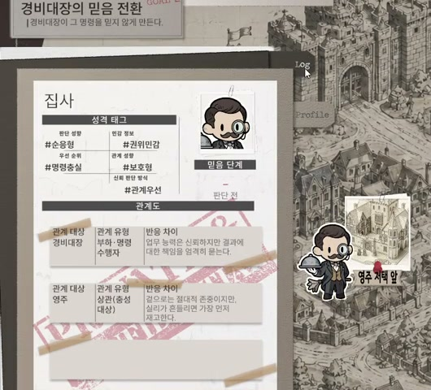
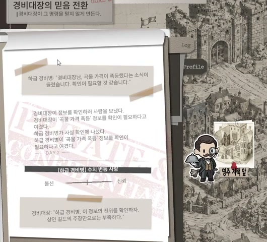

소문의 내용만큼, 듣는 사람도 중요하게.
같은 정보도 인물의 기억과 관계에 따라 다르게 받아들이도록 설계했습니다. 턴이 끝나면 행동 기록을 읽고 다음 소문을 건넬 상대를 고릅니다.
PC Chrome, Edge 권장. 첫 실행 때 약 60MB를 내려받습니다.


소개 영상
플레이 흐름
북문에서 내려진 경비 강화 명령을 흔들려면 누구에게 어떤 정보를 보내야 할까? 플레이어는 카드를 골라 장소에 소문을 퍼뜨리거나 특정 인물에게 제보하고, 정보원을 눌러 턴을 마칩니다. 인물의 판단과 행동은 다음 날의 기록에 남습니다.
집사는 권위에 민감하고 경비대장에게 업무를 맡깁니다. 플레이어는 이런 관계를 읽고 소문을 건넬 상대를 고릅니다.
곡물 가격이 폭등했다는 소식에 경비대장은 사실을 확인할 사람을 보냅니다. 로그를 읽으면 정보가 어떤 행동으로 이어졌는지 알 수 있습니다.
최희재의 담당 업무
미션과 날짜(DAY)가 진행되는 흐름을 설계했습니다. Unity에서 카드의 전달 대상, NPC의 믿음 변화와 행동, 미션 달성 여부를 한 턴으로 연결했습니다. 북문 기획서에는 집사가 명령의 근거를 의심하는 경우와 경비 초소가 비는 경우가 별개의 성공 조건으로 적혀 있습니다. 이런 복수 조건을 게임 흐름에 연결하면서 콘텐츠 기획자와 판정 규칙을 조율했습니다.
카드의 내용과 출처, 장소, 인물의 성향, 기억, 관계를 바탕으로 NPC가 정보를 해석하도록 LLM API를 연동했습니다. 응답이 없거나 형식이 맞지 않으면 해당 판단만 규칙 기반 로직으로 처리해 턴이 이어지도록 했습니다.
콘텐츠 기획·PM 담당자가 스테이지와 미션, NPC 설정, 정보 카드를 설계했습니다. UI/UX·아트 담당자는 화면 흐름과 캐릭터·배경·카드 이미지를 제작했습니다. 저는 이 데이터와 에셋을 Unity에 통합하고, 플레이 테스트에서 발견한 진행 문제를 팀과 조율해 최종 플레이어블 빌드를 만들었습니다.
LLM 판단 설계
믿음, 목표, 행동, 이동, 대사를 따로 물으면 앞뒤가 어긋납니다. 그래서 NPC 한 명의 판단은 한 번의 호출로 함께 정하게 했습니다. 판단 근거는 게임의 로그 패널에서 확인할 수 있습니다.
부정함→의심함→확인 필요→가능성 있음→신뢰함
이 단계부터 실제로 움직임
카드 내용, 카드 신뢰도, 출처 신뢰도, NPC 성향, 관계, 기억, 장소를 함께 넘깁니다.
카드 신뢰도와 출처 신뢰도는 서로 다른 축으로 나눴습니다.
게임이 행동과 장소 후보를 먼저 정하고, LLM은 그 안에서 믿음·행동·이동·대사를 JSON으로 답합니다.
후보 밖 응답이나 지어낸 근거는 검증 코드가 걸러 내고, 그 판단 한 번만 규칙 기반으로 대신합니다.
정보를 받은 NPC 중 새 판단이 필요한 인물만 부릅니다.
정보를 쓰지 않은 턴은 호출이 0건입니다.
브라우저 빌드에는 API 키를 안전하게 둘 곳이 없어, Cloudflare Workers 중계 서버를 두었습니다. 모델을 gpt-4o-mini로 고정하고 응답 길이에 상한을 두었으며, 선불 크레딧에 자동 충전을 꺼 비용이 넘치지 않게 했습니다.
밸런스 실험
규칙을 Unity와 분리해 자동 플레이를 돌리고, 규칙 기반 모드와 실제 LLM 모드를 비교했습니다. 밸런스는 실제 LLM 모드의 판단 기록을 기준으로 봤습니다.
움직이는 기준을 한꺼번에 낮춰 본 실험은 완주 0/3으로 실패했습니다. 목표 인물인 집사의 신뢰 성향이 높아 ‘의심함’에 한 번도 닿지 않은 것이 원인이었고, 일괄 완화 대신 인물별로 조정해야 한다는 결론을 기록으로 남겼습니다.
같은 카드도 인물에 따라 결과가 갈렸습니다. 한 경비 관련 카드는 경비대장에게 ‘의심함’, 집사에게 ‘확인 필요’로 읽혀, 인물의 성향과 관계가 판단을 바꾸도록 한 설계가 실제로 작동하는 것을 확인했습니다.
미션 클리어 27회 중 15회(56%)가 첫날에 끝났습니다. 4일 제한이 긴장을 만들지 못한다는 점을 문제로 기록했습니다.
결과와 배운 점
Claude Code와 Unity MCP로 ‘수정 → 실행 → 로그·화면 확인 → 다시 수정’을 반복하며 구현했습니다. 기획 방향과 최종 결정, Unity 에디터에서의 검수는 직접 했습니다.
AI는 NPC의 모든 요소를 수식으로 정리하자고 제안했지만, 상황에 따라 다양한 반응이 나오는 게임을 만들고 싶어 적용 범위를 줄였습니다. 반면 제가 놓친 예외 상황에 대한 제안은 받아들였습니다. 도구의 도움을 받아도 만들고 싶은 경험의 기준은 제가 세워야 한다는 것을 배웠습니다.
미션이 너무 빨리 끝나는 문제와 인물별 판단 기준 조정은 다음 과제로 남겼습니다. 장소별 신뢰도 보정이 LLM 판단에는 전달되지 않는 점도 알려진 한계로 기록했습니다.